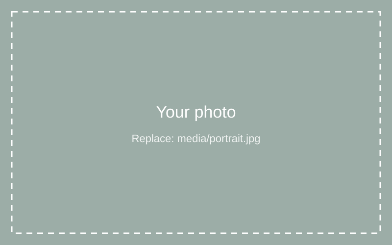

About
Hi, I'm Mikey.
[Your words] Who you are and what draws you to design: interaction design, customer experience, sound and space, and technology that respects people's attention.
[Your words] How consulting and years in hospitality shaped how you think about people and services.
At a glance
- 2026 – 2027MSc Interactive Digital Media, Trinity College Dublin. Research project: a spatial alternative to social media feeds.
- 2024 – 2025Technology Consulting Analyst, Deloitte. SAP S/4HANA implementation, client workshops and the Office of GenAI.
- 2022Digital Intern, Aras na Gael, Galway. Digital interface advice, social media, event posters and ads.
- 2019 – 2023BA Digital Arts & Technology with Economics, University of Galway (2.1).
- Along the wayHospitality and outdoor work in Ireland, the USA, Canada and Australia. Marathons for charity.
Tools
- Figma
- Unity
- Processing
- 3ds Max
- Blender
- Ableton
- Audacity
- JavaScript
- HTML & CSS
- Python
- SQL
- Arduino